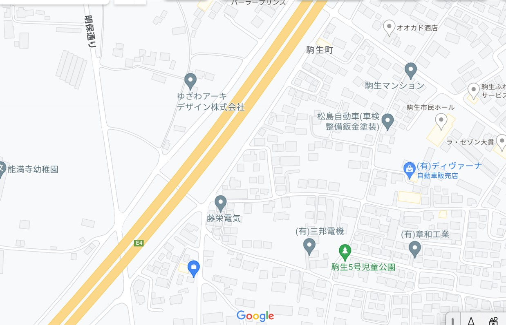

About当社について
HKコンサルティンググループは中小企業と個人事業主の方に寄り添うコンサルティング会社です。
こんなお悩みはございませんか？
・会社経営がうまくいかず、どこに手を打てば利益が出るのか
・経営の土台となる考え方はいろいろあるけど、どれが会社に合ってるか
・業界知識を知りたいけれど、どうやって調べたらいいのか
これらのお悩みを解決するために私たちは寄り添い、適切なアドバイスを行います！
まずはお気軽にお問合せください。 初回面談無料、2回目以降5,000円（税別）/1時間となります。
コンサルタント
岸 広
経歴：栃木県出身。
中央大学卒業後、卸売業の経理職、塾経営を経て、
栃木県内の会計事務所で会計税務業務を経験。
1996年栃木県宇都宮市にて岸会計事務所を独立開業し、現在創業26年目となります。
多数のセミナー講師経験あり。
保有資格は税理士
趣味は日本の伝統文化に触れること
岸 大路
経歴：埼玉県出身。
東京理科大学卒業後、群馬県の東証一部上場会社に経理職で入社。
在職中に公認会計士試験に合格したことを機に、東京のBIG4監査法人に転職し監査業務に従事。
その後、都内中小税理士法人で税務実務を経験。
2021年栃木県宇都宮市にて公認会計士事務所を独立開業し、
家族の経営する岸会計事務所の所属税理士としても勤務している。
在籍していたBIG4監査法人の業務受託も現在受嘱している。
保有資格は公認会計士、税理士、TOEIC990
趣味はミニブタカフェ巡り
seminorセミナー一覧
商人塾
易経・ユダヤ商人・近江商人から学ぶ経営哲学講座
全6回シリーズで開催しております。1講座から受講可能です。
講座詳細
第1回：易経の基礎
第2回：易経から見る現代の企業経営のツボ
第3回：ユダヤ商人の考え
第4回：ユダヤ商人からみるM&Aのコツ
第5回：近江商人の考え
第6回：近江商人から見る事業承継のカギ
出張講座各回につき50,000円（税別）となります。
全6回一括お申込みの場合、10％割引で270,000円（税別）となります。
社会福祉法人の安定経営セミナー
独立行政法人福祉医療機構の調査によると、全国の社会福祉法人のうち、4社に1社は赤字となっています。
この厳しい状況を乗り越えるためには社会福祉法人ならではの経営感覚が必要です。
財務会計と内部統制の整備に強い公認会計士が、数字とソフト面との両面から安定経営をお手伝いさせていただきます！
Contactコンタクト
bs-21*bloom.ocn.ne.jp
お手数ですが、*を＠に変えて連絡いただけますと幸いです。
対面、ZOOMなどによるオンライン面談などご要望に応じて対応させていただきます！

事務所所在地：
〒320-0065
栃木県宇都宮市駒生町１６７５－８
↑